Chapter 3 Polar maps
What is required for mapping in polar regions?
- shape-feature orientations, the dateline and the poles
- handling of data in long-lat, understanding of metrics and shape (area, length, angle)
- projected maps can be very hard to do, each has its own issues
- quantities like vector fields
- conventions for global data -180/180, 0/360
3.1 Projections
A brief overview here. For more please see the geocompr book.
Projections are used to solve particular measurement problems. These include distance, area, and angle.
- Equal-area - area is simple, we can calculate planar area anywhere
- Equi-distant - less simple, applies along an axis or from one point only
- Conformal - preserves shape, i.e. angles are sensible
No projection is perfect for every situation, and quite often tools will work in geographic coordinates, or raw longitude latitude values using algorithms suited for angular units on a sphere or ellipsoid.
Most projection specification is made by choosing an EPSG code, and if one exists for your region then it’s a good choice. However, sometimes the right EPSG does not exist and it’s simpler to specify a custom projection.
Each +proj= code is a projection family, there are many more than shown here.
Lambert Azimuthal Equal Area
+proj=laea +lon_0=0 +lat_0=-90 +datum=WGS84Polar Stereographic (south)
+proj=stere +lon_0=0 +lat_0=-90 +lat_ts=-70 +datum=WGS84Longitude-Latitude
+proj=longlat +datum=WGS84Lambert Conformal Conic
+proj=lcc +lon_0=147 +lat_0=-42 +lat_1=-50 +lat_2=-35 +datum=WGS84Each of these has in common a central longitude and latitude, and many custom projections can be made using only these parameters.
Other parameters include
- +x_0, +y_0 - false easting (adds an arbitrary offset, usually to avoid negative coordinates)
- +lat_0, +lat_2 - these are for conic projections, the secant latitudes
- +ellps, +no_defs, +over - various datum/ellipsoid specific
- +lat_ts - latitude of true scale projection specific, e.g. Stereographic
- +zone, +south - projection-specific parameters, e.g. for UTM
Functions in R to expand EPSG parameters:
epsg <- 3412 ## south pole stereographic
# 3409 ## south polar equal area
# 3411 ## north polar stereographic (at 45W longitude, and Hughes 1980 ellipsoid)
# 3413 ## north polar stereographic (at 45W longitude, WGS84)
prj <- sprintf("+init=epsg:%i", epsg)
rgdal::CRSargs(sp::CRS(prj))
## sf is easier
sf::st_crs(epsg)3.2 Mapping in R
## rgdal: version: 1.4-4, (SVN revision 833)
## Geospatial Data Abstraction Library extensions to R successfully loaded
## Loaded GDAL runtime: GDAL 2.4.2, released 2019/06/28
## Path to GDAL shared files: /usr/share/gdal
## GDAL binary built with GEOS: TRUE
## Loaded PROJ.4 runtime: Rel. 5.2.0, September 15th, 2018, [PJ_VERSION: 520]
## Path to PROJ.4 shared files: (autodetected)
## Linking to sp version: 1.3-1The oldest general mapping tool in R is the maps package. It has a simple whole-world coastline data set for immediate use.
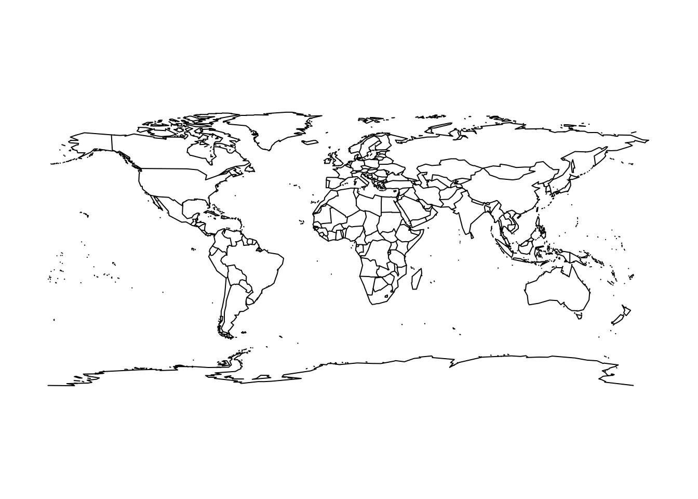
The data underlying this live map is available by capturing the output as an actual object.
If we look carefully at the southern edge and the eastern edge, notice that the coastline for Antarctica does not extend to the south pole, and the Chukotka region of Russia east of 180 longitude is not in the western part of the map.
maps_c <- maps::map(plot = FALSE)
lonlat <- cbind(maps_c$x, maps_c$y)
plot(lonlat, pch = "+", cex = 0.4, axes = FALSE)
lines(lonlat, col = "dodgerblue")
abline(h = c(-90, 90), v = c(-180, 180))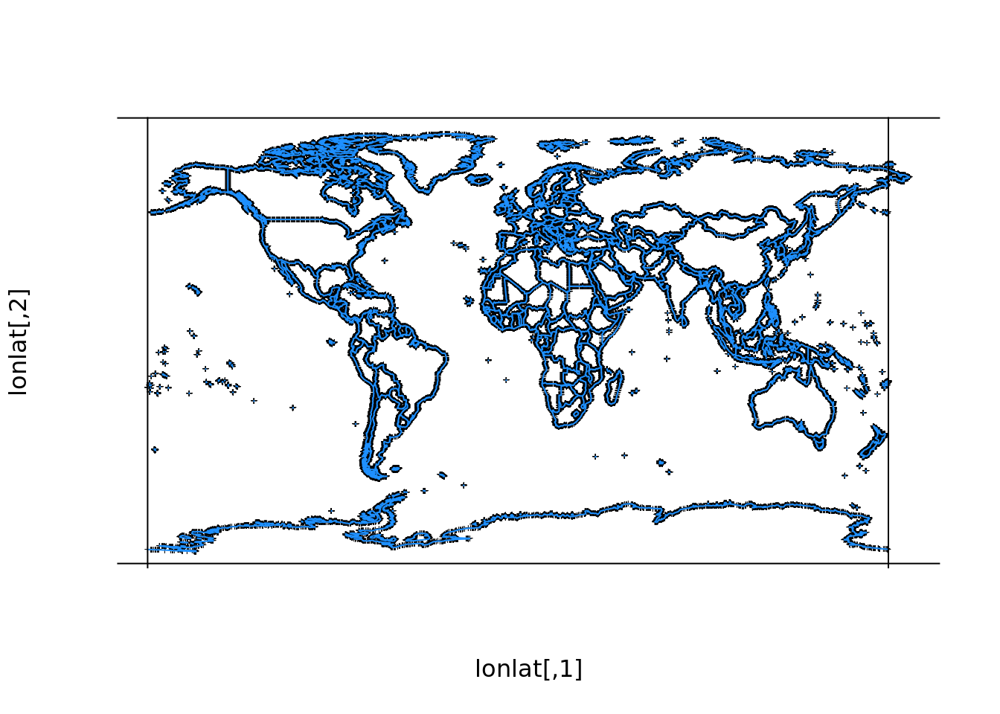
A very similar and slightly more modern data set is available in the maptools package.
(It’s not sensible use maps or maptools for coasline or country boundary data, but they
are handy for exploring concepts ).
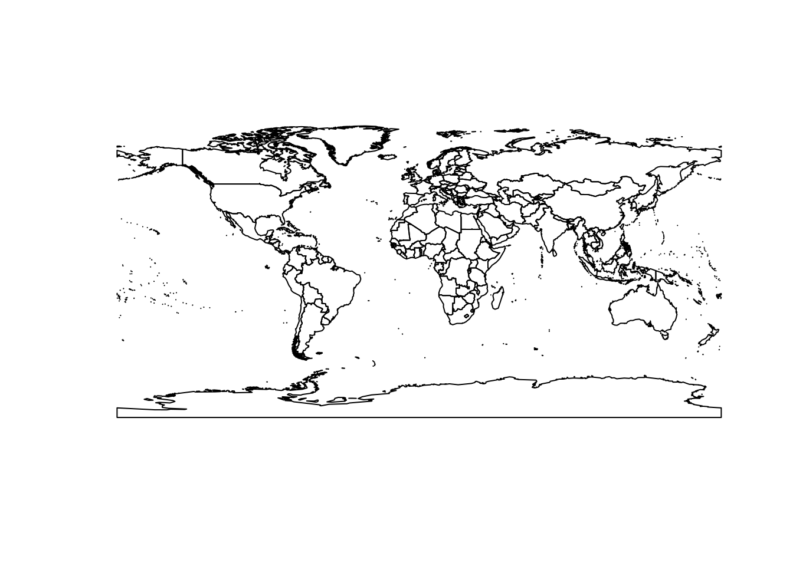
This data set aligns exactly to the conventional -180/180 -90/90 extent of the longitude/latitude projection.
plot(0, type = "n", axes = FALSE, xlab = "", ylab = "", xlim = c(-180, 180), ylim = c(-90, 90))
rect(xleft = -180, ybottom = -90, xright = 180, ytop = 90, border = "darkred", lwd = 4, lty = 2)
plot(wrld_simpl, add = TRUE)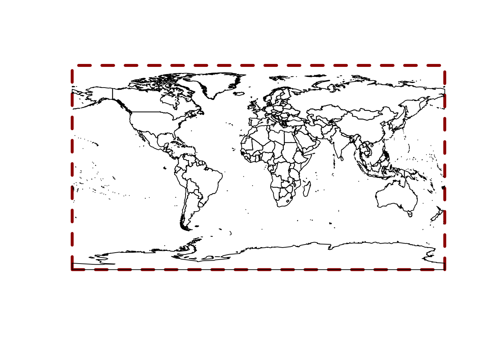
3.3 Exercise 1
How can we find the longitude and latitude ranges of the maps data maps_c and the maptools data wrld_simpl?
## List of 4
## $ x : num [1:82403] -69.9 -69.9 -69.9 -70 -70.1 ...
## $ y : num [1:82403] 12.5 12.4 12.4 12.5 12.5 ...
## $ range: num [1:4] -180 190.3 -85.2 83.6
## $ names: chr [1:1627] "Aruba" "Afghanistan" "Angola" "Angola:Cabinda" ...
## - attr(*, "class")= chr "map"3.3.1 EX 1 ANSWER
SOLUTION
## [1] -180.0000 190.2708## [1] -85.19218 83.59961## [1] -180.00000 190.27084 -85.19218 83.599613.4 Exercise 2
Can we draw polygons with a fill colour with the maps package?
Why don’t these work?
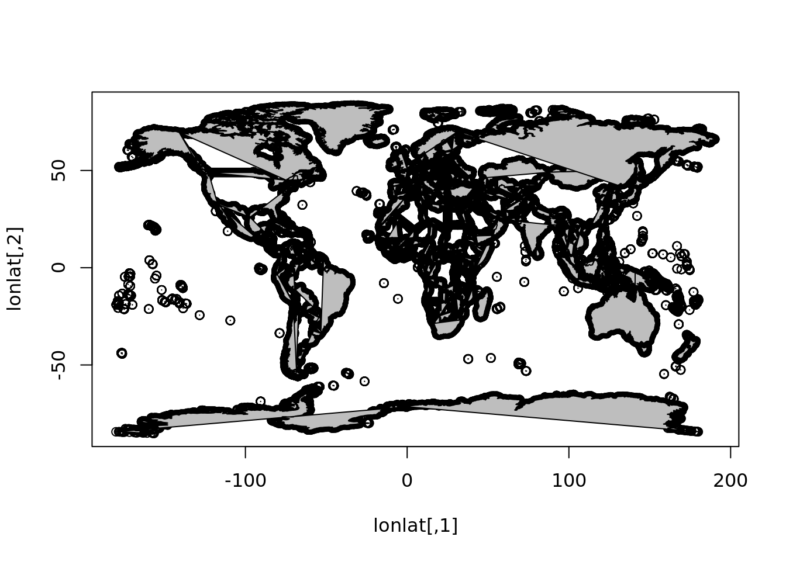
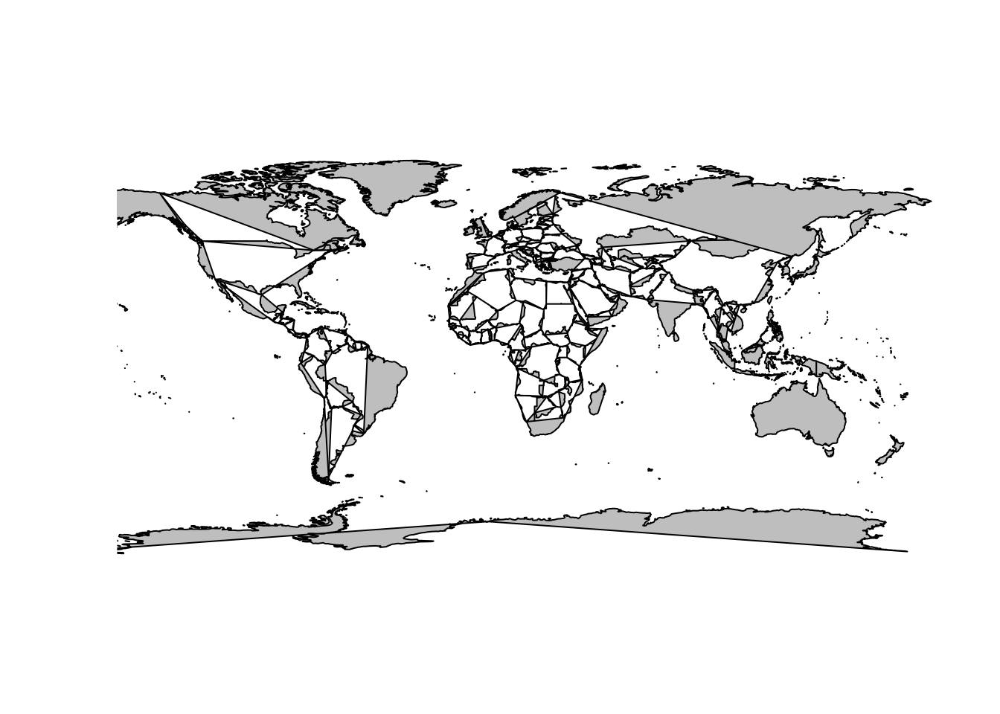
3.4.1 EX 2 ANSWER
SOLUTION
The actual data structure in the maps package is not suitable generally for subsetting polygons, or controlling polygon drawing.
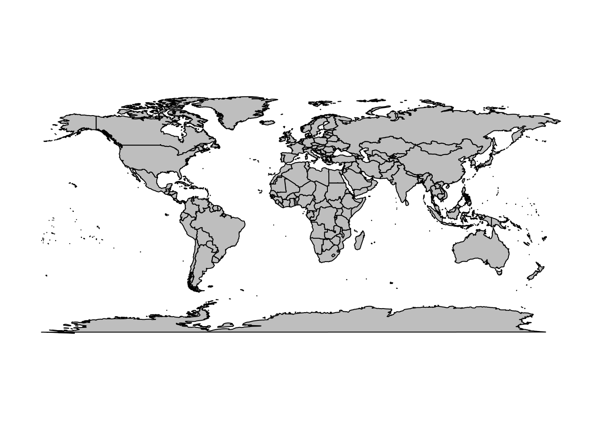3.5 Polygon catastrophe
What’s going on? Look at the very south-eastern corner of the map. The “coastline” has been extended to the very south boundary of the available area.
plot(0, type = "n", axes = FALSE, xlab = "", ylab = "", xlim = c(-150, 180), ylim = c(-90, -60))
plot(wrld_simpl, add = TRUE, col = "grey")
rect(xleft = -180, ybottom = -90, xright = 180, ytop = 90, border = "darkred", lwd = 4, lty = 2)
maps::map(add = TRUE, col = "dodgerblue", lwd = 3)
When we add the old maps coastline see that it does not extend to 90S and it does not traverse the southern boundary.
One reason for this is that if we choose a projection where the east and west edges of the Antarctic coastline meet then we get what looks a fairly clean join.
## scale factor
f <- 3e6
plot(rgdal::project(lonlat, "+proj=laea +lat_0=-90 +datum=WGS84"), asp = 1, type = "l",
xlim = c(-1, 1) * f, ylim = c(-1, 1) * f, xlab = "", ylab = "")
If we try the same with wrld_simpl it’s not as neat. We have a strange “seam” that points exactly to the south pole (our projection is centred on longitude = 0, and latitude = -90.
plot(sp::spTransform(wrld_simpl, "+proj=laea +lat_0=-90 +datum=WGS84"), asp = 1,
xlim = c(-1, 1) * f, ylim = c(-1, 1) * f, xlab = "", ylab = "", lwd = 3)
abline(v = 0, h = 0, lty = 2, col = "grey")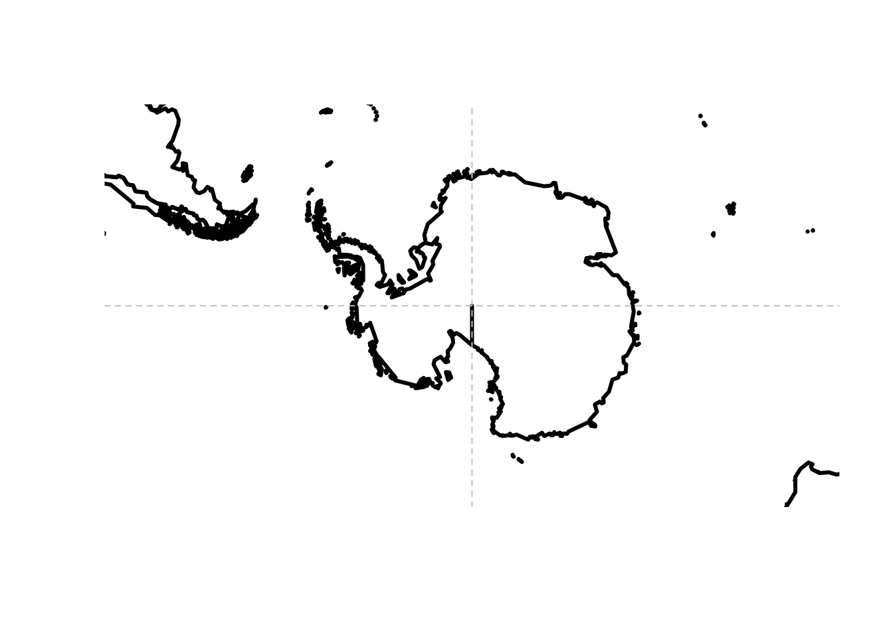
3.6 Exercise 3
How can we add our own data, a set of points, onto the polar map?
Add the pts matrix of longitude/latitude to this map, or define your points and add those.
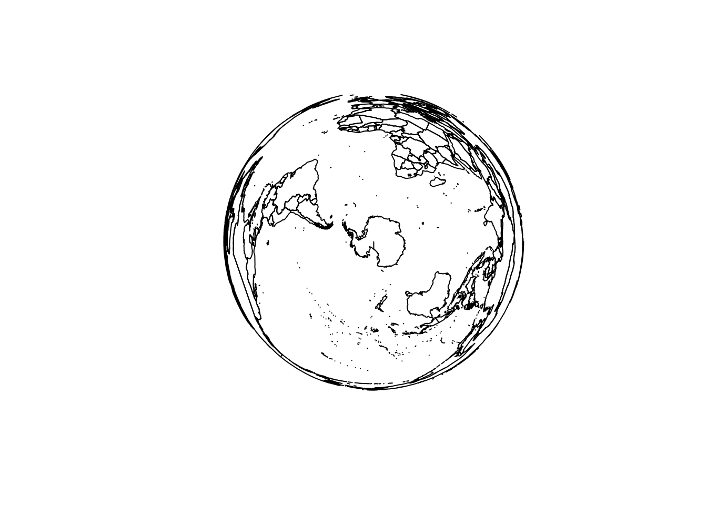
Hint: we need the coordinate reference system string “+proj=laea +lat_0=-90 +datum=WGS84” and a function to transform a matrix of longitude-latitude values.
3.7 Let’s use the maps data!
In maps_c we have the maps data structure, and this looks promising.
## List of 4
## $ x : num [1:82403] -69.9 -69.9 -69.9 -70 -70.1 ...
## $ y : num [1:82403] 12.5 12.4 12.4 12.5 12.5 ...
## $ range: num [1:4] -180 190.3 -85.2 83.6
## $ names: chr [1:1627] "Aruba" "Afghanistan" "Angola" "Angola:Cabinda" ...
## - attr(*, "class")= chr "map"mp <- maps_c
pxy <- rgdal::project(lonlat, "+proj=laea +lat_0=-90 +datum=WGS84")
mp$x <- pxy[,1]
mp$y <- pxy[,2]
mp$range <- c(range(mp$x,na.rm = TRUE), range(mp$y, na.rm = TRUE))
mp$range## [1] -12709814 12704237 -12576156 12470787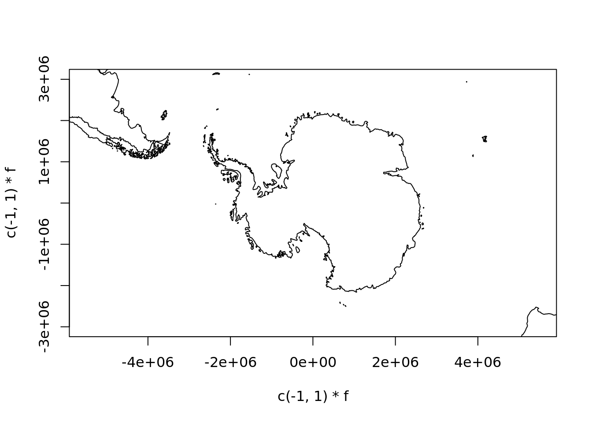
## but it doesn't take much to go awry
plot(c(-1, 1) * f, c(-1, 1) * f, type = "n", asp = 1)
maps::map(mp, add = TRUE, fill = TRUE, col = "grey")
The problem is that the maps database has enough internal structure to join lines correctly, with NA gaps between different connected linestrings, but not enough to draw these things as polygons. A similar problem occurs in the default projection. While wrld_simpl has been extend by placing two dummy coordinates at the east and west versions of the south pole, this data set does not have those.
We have to look quite carefully to understand what is happening, but this is wrapping around overlapping itself and so close to the southern bound we barely notice.
plot(0, type = "n", axes = FALSE, xlab = "", ylab = "", xlim = c(-180, -110), ylim = c(-90, -60))
rect(xleft = -180, ybottom = -90, xright = 180, ytop = 90, border = "darkred", lwd = 4, lty = 2)
maps::map(add = TRUE,col = "grey", fill = TRUE)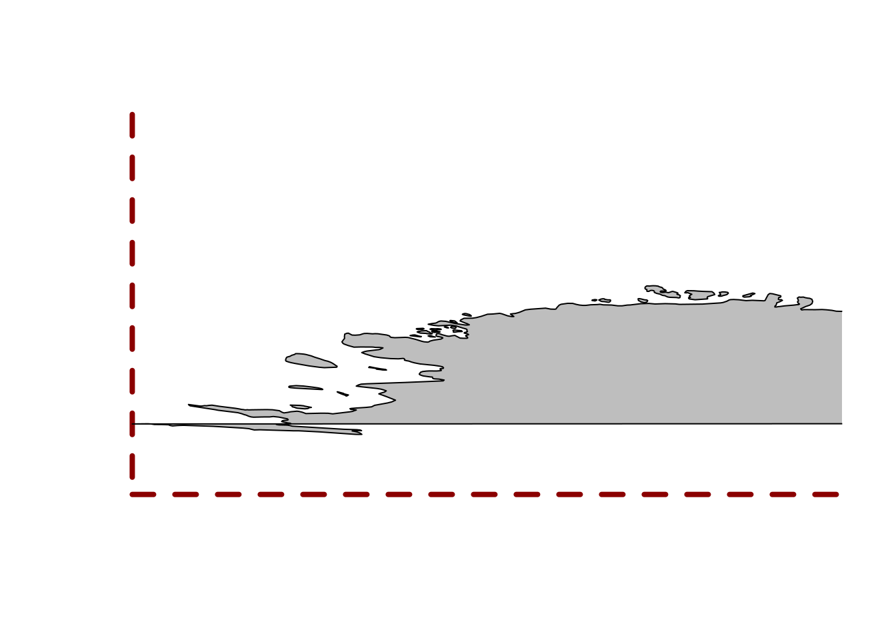
mpmerc <- maps_c
pxy <- rgdal::project(lonlat, "+proj=merc +datum=WGS84")
mpmerc$x <- pxy[,1]
mpmerc$y <- pxy[,2]
mpmerc$range <- c(range(mpmerc$x,na.rm = TRUE), range(mpmerc$y, na.rm = TRUE))
mpmerc$range## [1] -20037508 20037508 -20179524 18351859## the catastrophe made a little clearer
plot(0, xlim = range(mpmerc$range[1:2]), ylim = c(mpmerc$range[1], 0))
maps::map(mpmerc, fill = TRUE, col = "grey", add = TRUE)
3.8 Reprojecting to polar regions
In essence it should be easy, but details really matter. Here the details of the format, the orientation and layout of the data (NetCDF, and common conventions used in physical ocean models)
## Loading required namespace: ncdf4## Warning in .varName(nc, varname, warn = warn): varname used is: sst
## If that is not correct, you can set it to one of: sst, anom, err, ice## Warning in rgdal::rawTransform(projfrom, projto, nrow(xy), xy[, 1], xy[, :
## 48 projected point(s) not finite## Warning in rgdal::rawTransform(projto_int, projfrom, nrow(xy), xy[, 1], :
## 6211 projected point(s) not finite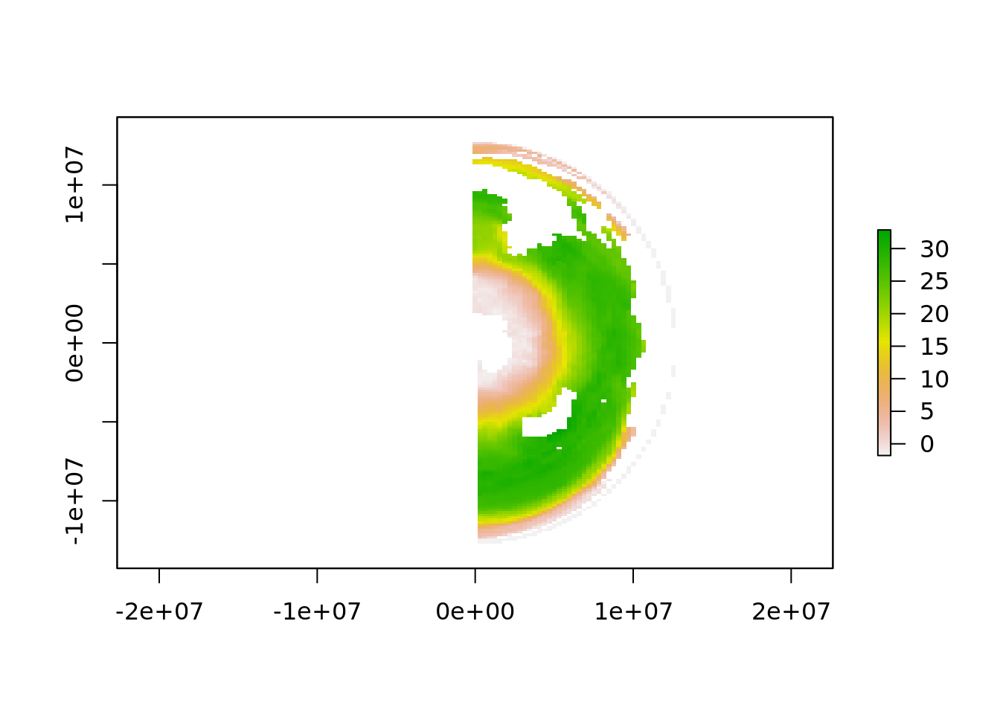
## Warning in rgdal::rawTransform(projfrom, projto, nrow(xy), xy[, 1], xy[, :
## 48 projected point(s) not finite## Warning in rgdal::rawTransform(projto_int, projfrom, nrow(xy), xy[, 1], :
## 6213 projected point(s) not finite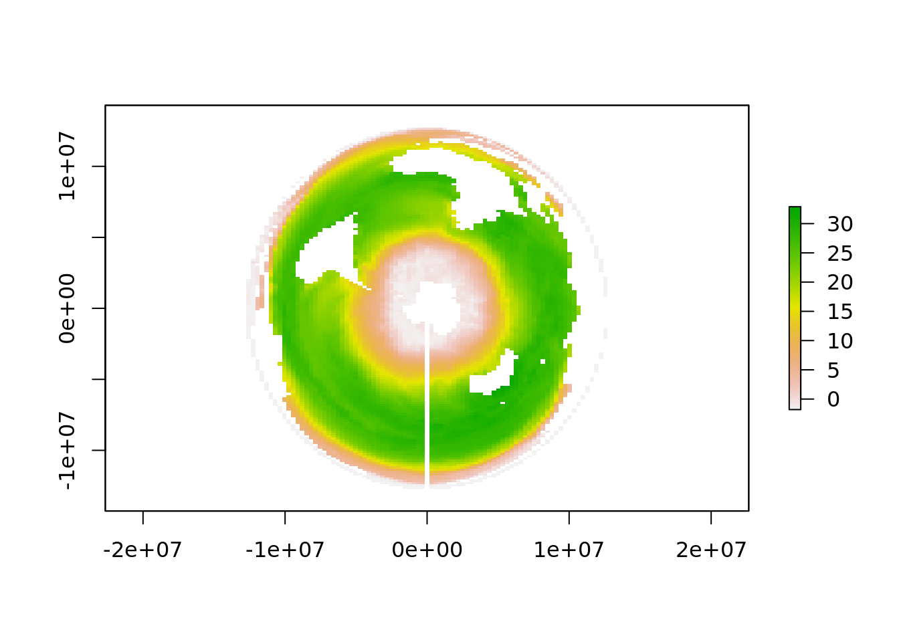
Straight lines in longitude/latitude do not maintain their shape when reprojected unless we add extra vertices along lines of constant longitude and latitude. The longitudes are great circles, but the latitude lines are not.
grat_lines <- rasterToPolygons(raster(extent(-180, 180, -75, 0),
crs = "+proj=longlat +datum=WGS84", res = 30))
plot(spTransform(grat_lines, "+proj=laea +lat_0=-90 +datum=WGS84"))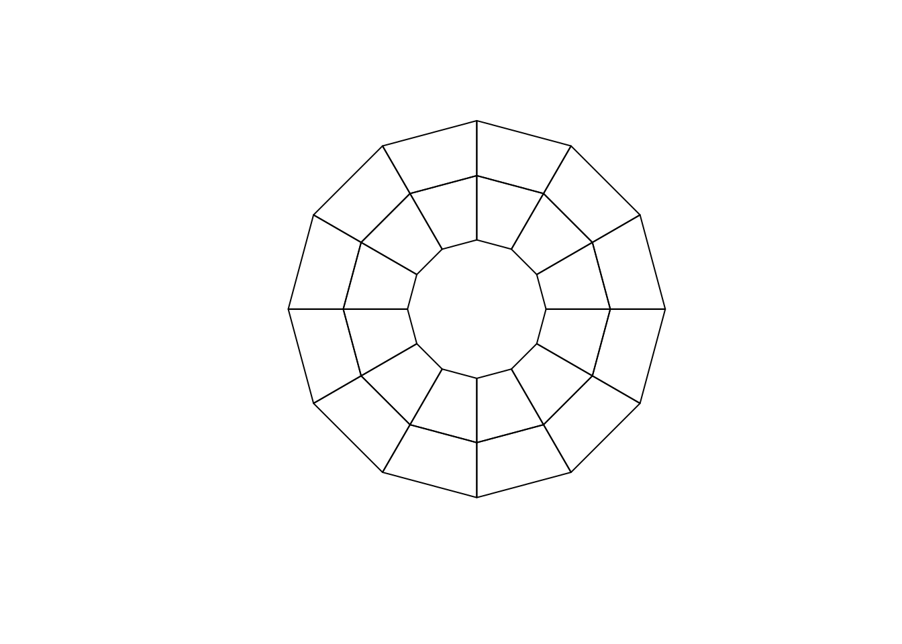
The pole is undefined in Mercator projection.
## [,1] [,2]
## [1,] -20037508 7.081155e-10## [,1] [,2]
## [1,] -20037508 -8362699## Warning in rgdal::project(cbind(-180, -90), "+proj=merc"): 1 projected
## point(s) not finite## [,1] [,2]
## [1,] Inf InfSensible polar projections are stereographic and Lambert Azimuthal Equal Area. These are more or less identical over a large area, so knowing what is in use really matters!
data("wrld_simpl", package = "maptools")
laea <- "+proj=laea +lon_0=0 +lat_0=-90 +datum=WGS84"
stere <- "+proj=stere +lon_0=0 +lat_0=-90 +datum=WGS84"
wm <- wrld_simpl[coordinates(wrld_simpl)[,2] < 30, ]
## remember that plotting in R is usually *NOT* coordinate system aware ...
plot(spTransform(wm, laea))
plot(spTransform(wm, stere), add = TRUE, border = "firebrick")
points(0, 0, cex = 40)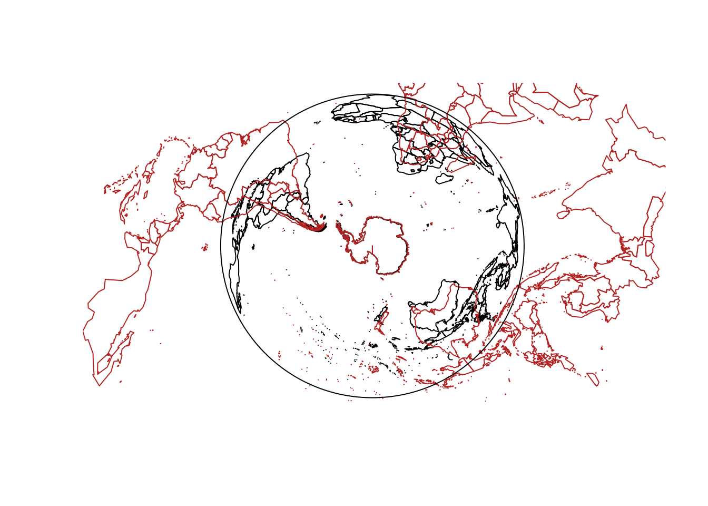
This video explains the Lambert Azimuthal Equal Area projection: https://www.youtube.com/watch?v=quzIU4nL9ig (crux at 2:25 with the spherical shells).
3.9 Demonstration of the projection concept
3D plots that show various projection concepts.
First prepared here: http://mdsumner.github.io/2016/01/26/Three_Projections.html